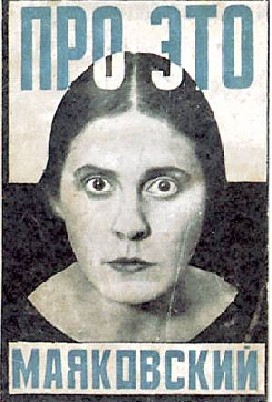
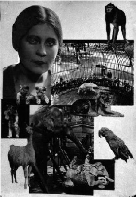
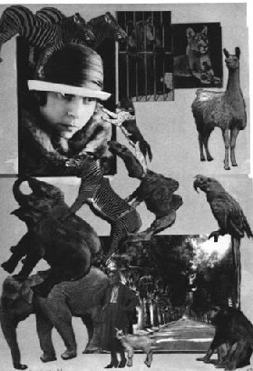
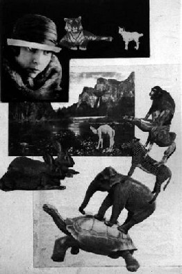
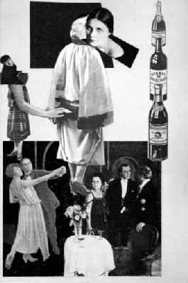
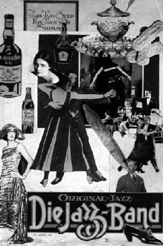

| |
Pro
Eto: Mayakovsky and Rodchenko’s Groundbreaking Collaboration
Katerina Romanenko, CUNY Graduate Center
Introduction
One of the great artistic talents of the twentieth century,
Alexander Rodchenko produced innovative work in many fields:
painting, sculpture, collage, photography and book, magazine,
advertising and poster design. Published in 1923, the poem Pro
Eto (About This), composed by Vladimir Mayakovsky with
corresponding illustrations by Rodchenko, was the first Mayakovsky
poem illustrated by the artist. Authorship of “constructivist
Rodchenko” was announced at the beginning of the book,
emphasizing the uniqueness and self-sufficiency of the illustrations.
It was the first book in the history of art illustrated with
photomontage. The montages were composed from cutouts of magazines
and photographs, including those of Mayakovsky, Lili Brik, the
woman he loved, and their contemporaries. Never before had images
of the actual people described in a poem been used to illustrate
it.
Identical views and shared ideology turned Rodchenko and Mayakovsky
into friends almost immediately after their first meeting in
1920.[1] Mayakovsky had a great respect and appreciation for
Rodchenko’s style. In early 1923 they became close collaborators
in advertisement production. The poet and the artist were also
in contact as members of the Lef group, for which Rodchenko
became the art editor of the magazine. It was not a coincidence
that Mayakovsky asked Rodchenko to design and illustrate the
publication of his recently finished poem.
The complicated combination of artistic, social and personal
reasons stands behind Rodchenko’s drastic shift to graphic
design and to photomontage in 1923. Rodchenko had an extraordinary
sensitivity to new ideas. Pro Eto’s illustrations
were created with clear awareness of commercial advertising,
photojournalism, Berlin Dada experiments and most importantly
Russian avant-garde cinema. Pro Eto is a result of
Rodchenko’s ability to synthesize and to invent.
|  |
|
Fig. 1. Cover photomongate |
This book is a true avant-garde manifestation yet at the same
time it reflects the beginning of general depreciation of the
avant-garde spirit. In 1923, changes in state politics concerning
the arts, paralleled by changes in the art world itself, started
to take place. The extreme aesthetic experiments of Rodchenko
and his fellow artists were almost illegible for the general
public. Enthusiasts of the new life and new culture, avant-garde
artists moved into graphic design to stay connected to the new
society that they strongly believed in. Parallel to that development,
by 1923 easel painting and realism were restricted to only the
state-approved artistic style. Soon it became so aggressive
that photomontage, and later photography, would provide the
only way to represent reality while avoiding the painterly realism.[2]
For Mayakovsky and for Rodchenko Pro Eto was an attempt
to hold their positions as avant-garde artists and to prove
that there was a place for their vision in the changing society.
Pro Eto is overloaded with historical significance.
Yet no less importantly it is a work of art with remarkable
aesthetic and conceptual quality. In this paper I will attempt
to emphasize the highly original formal solutions and strong
conceptual content of Rodchenko’s illustrations. I will
point up how attentive the artist was to the ideas of the poet
and how delicately he treated the controversial subject-matter
of the poem.
|  |
|
Fig. 2. Photomontage 8, Love |
Vladimir Mayakovsky and Lili Brik are one of the most remarkable
pairs of lovers in history and in literature. The role of Lili
and her husband Osip Brik in Mayakovsky’s life has attracted
the attention of serious scholars as well as scandalmongers.
Osip Brik was the closest friend of the poet. The three of them
lived together for almost ten years. Mayakovsky always called
the Briks his family, and Lily his wife. For some their relationship
is an example of corrupt morals; for others they represent a
bold attempt to live by a new type of love and friendship. The
poem was written during two-month separation of Mayakovsky from
Lili Brik in the winter 1922-1923. The separation was her initiative,
and was willfully accepted by the poet. The main suggested reasons
for this were his jealousy and her preaching of free love. The
poem expresses the troubled state of mind of the suffering poet.
Although the personal relationships served as a lyrical springboard
for the story, the poem was developed to deal with the universal
problem of love and social relationships in the new Soviet society.
Five years after the revolution, which Mayakovsky embraced with
all his heart, came the New Economic Policy, and all that he
had fought against seemed to be resurrected. The black-marketers,
private entrepreneurs, and bureaucracy all affected the poet
deeply.[3] For him the extreme privacy of the subject was the
only language capable of expressing his universal questioning
of the significance of life.
Each photomontage is an illustration of a corresponding part
of the poem presented as a complex kaleidoscope of its imagery,
direct and indirect meanings, metaphors and suggestions. By
condensing the compositional elements, Rodchenko captured the
tension and the vivid ideas of the poem. The constructive arrangement
of organic and inorganic, dynamic and static objects functions
as a visual analysis of reality.[4] The montage component of
photomontage is a means of destabilizing that reality and calling
its legitimacy into question.
Montage 8. Part III Application To… “Love”
The theme of Love’s immunity to byt (Russian
for “everyday life,” routine, inertia, philistine
way of existence) and Love’s power to save the world is
repeated throughout the illustrations. Last photomontage, Montage
8, is a pinnacle of the sequence of the illustrations leading
to the culmination of the poem. Lily’s face at the top
left corner dominates this montage. The line beneath reads:
"It may, may be, some time, some day, along a pathway of
the Gardens of the Zoo she too- for she loved animals- will
also the Gardens re-enter/smiling like that photo in the desk
of my room."[5]
Mayakovsky actually kept on his desk a photograph of a smiling
Lili, taken in the Berlin Zoo. Yet Rodchenko did not use this
photograph, but another portrait of Lili in which she does not
smile, preserving an ideal, romantic, even mysterious aura.
This obvious contradiction of the text implies that Lili’s
face functions not as the poet’s personal subject of affection,
and not even as the heroine of the poem, but as a symbol of
victorious image of Love for All, described in subsequent lines:
"So that love won’t be a lackey there/ of livelihood,
/ wedlock, / lust/ or worse. / Decrying bed, / forsaking the
fireside chair, / so that love shall flood the universe."[6]
|  |
|
Fig. 3. Version 1 of Photomontage
8 |
It is remarkable that Rodchenko produced this montage in three
versions. On one of these variants we find two portraits of
Lili. The image of her wearing a hat and a furry coat is placed
at the top of the page next to photographs of a bear and a lion.
Another portrait at the bottom is superimposed on a large picture
of a road receding into space, framed by straight rows of tall
trees. The strong diagonal created by the road is paralleled
by three diagonally-placed three rectangular pictures at the
top of the page and by diagonally-positioned animal figures
placed on top of each other at the middle. Attempting to stabilize
the series of diagonals, the artist constructed a vertical line
of images at the right edge of the page.
A more successful whole was achieved in the second version.
Here Rodchenko employed fewer figures. Intersecting planes of
pictures animate the surface. Yet the unsupported pyramid of
animals at the bottom of the page breaks the balance of the
composition and destroys the well-composed arrangement at the
top. Rodchenko obviously liked the idea of the animal pyramid.
Possibly he was referring to the mythological belief that the
earth is flat and rests on the backs of elephants which stand
on a giant turtle swimming in an ocean that is the universe.
In this case the pyramid of the animals symbolizes the superstitious,
irrational and antiscientific old world, which will be destroyed
in the future.
Rodchenko changed the scheme completely in the published montage.
The imagery is arranged in a carefully controlled way. Photographs
taken from different angles and distances intersect each other
in dynamic yet very balanced horovod, or circular dance, creating
a unified and vibrant whole. Different compositional devices
are actively employed by the artist. In this version, however,
overlapping, diagonals, and contrasts are utilized in a more
discrete manner. Their elegant and subtler character creates
an atmosphere of harmony and substance. This peacefulness and
stability reflects the utopian vision of the future expressed
in the poem.
|  |
|
Fig. 4. Version 2 of Photomontage
8 |
At the top of the montage Rodchenko placed a picture of a polar
bear marching in his cage. The jealousy turned the hero into
the bear earlier in the poem thus the bear in the cage symbolizes
that there will be no jealousy in the future. He probably rejected
the pictures of the receding road and the paradisiacal landscape
as too sentimental. Showing different kinds of noble animals
and utilizing the fact that animals are immune to human vice,
Rodchenko successfully illustrated the poet’s prediction
that in the future there will be no place for vulgar philistinism,
no small-mindedness, no idleness. And finally, emerging from
behind and dominating the whole is the image of Love, which
for Mayakovsky was “the main thing.” Mayakovsky
wrote: “My poetry, my actions, everything else stems from
it. Love is the heart of everything.”[7] Nevertheless
what looks like a “love poem” is in fact a poem
about the search for a new self more consistent with ideals
of the new society, a search for Love in its universal, all-embracing
sense, Love for all and for everyone. As Feodor Dostoevsky believed
that beauty would save the world, Mayakovsky believed that Love
would do the same. Rodchenko’s imagery re-enforces the
poem in which the poet dealt with the tension between personal
affection, which is possessive, subject to jealousy and suffering,
and Ideal Love, which is free and beautiful.
The Controversial Aspects of the Illustrations
A tormented personal love affair of the poet presented with
astonishing sincerity within a poem was extremely controversial
for that time. Rodchenko’s photomontage was an integral
part of the poem; the opinion expressed regarding the written
words was usually applied to the illustrations. During the period
of Mayakovsky and Lili’s separation Rodchenko was in close
contact with both. Not only did Rodchenko know the context of
the poem’s creation, he also witnessed Lili and Mayakovsky’s
relationships before the episode of separation. That placed
him in a difficult situation. It gave him the advantage of a
more personal understanding of the poem, yet it tested his impartiality.
In all his montages Rodchenko carefully avoided any gossiping.
It was known that during the separation Mayakovsky and Lili
exchanged short notes. In fact on several occasions Rodchenko
himself delivered those. In the poem there is a mentioning of
the notes that connected the hero with his loved one. But Rodchenko
rejected the version of Montage 5, where he himself is presented
handing over a note to the heroine. In the accepted variant
Rodchenko kept the self-portrait but presented himself as an
inactive participant: a strange dancer on the background next
to the partying group. Montage 5 is a disapproving comment on
the artificiality and emptiness of bourgeois material culture.
It presents the partying guests in the heroine’s apartment.
They are the hero’s friends who forgot about revolution
and spend their lives dancing and having empty conversations.
Placing himself in the “friends” arena is a brilliant
artistic statement clearly reflecting Rodchenko’s self-critique
and his sharing of Mayakovsky’s vision expressed in the
poem.
|  |
|
Fig. 5. Photomontage 5, Friends |
I think that among the reasons for Rodchenko’s doubts
and production of the additional versions, the desire to eliminate
the excessive directness of the references is important. In
the first version of Montage 8, a picture of a dog reaching
out for the Lili’s portrait crowns the top of the animal
pyramid. Lili and Mayakovsky used to call each other Kisa
and Schen (Kitten and Puppy).[8] Rodchenko, being a
close friend, definitely knew about these nicknames. Thus the
dog on the montage could be a metaphorical representation of
the poet. Still, one cannot avoid thinking about the puppy-like
character of his love. This version contains the image of a
lioness placed at the top right corner, next to the picture
of the caged bear. The bear refers to the poet’s transformation
into the beast earlier in the poem. The lion is a big cat, so
it could function as a continuance of the parallels to the nicknames,
this time Lili’s. But it could also be a commentary on
her relationship with the poet, which had a noble yet cruel
character. This association is supported by the juxtaposition
of Lili’s portrait at the bottom of this montage with
the picture of a baby goat. The baby goat, a symbol of sacrifice,
could refer to the sacrificial, altruistic love that will rule
in the future. However it also could be perceived as a reference
to the sacrificial love of the poet to the beautiful but too
proud and independent Lili. It is possible that Rodchenko disliked
the potential interpretation of this version in terms of the
heroes’ actual personalities and relationships, in another
version he avoids such direct references. At the top, unified
by a black background, we find Lili’s portrait, a picture
of a tiger, and a picture of a baby goat. In the context of
the final scene of the poem it might be associated with the
harmony and peace that will exist in the future. It also leads,
however, to a predator-prey contrast, and the viewer might be
tempted to see the combination of baby goat-tiger as a parallel
to Mayakovsky and Lili’s relationship. In the published
version, Rodchenko kept the image of a lion and added a picture
of three lion cubs, but eliminated the image of the baby goat,
thereby dismissing this predator-prey association.
As mentioned before, one of the most controversial aspects
of Rodchenko’s illustrations was the use of the photographs
of the real people involved in the story. One of the most aggressive
criticisms of Mayakovsky and Rodchenko’s work, in fact,
came from Nickolay Chuzhak, the member of Lef. In his
essay ”From Illusion to Materiality” (1925), Chuzhak
blamed Rodchenko for imposing the naturalism of the poem on
the reader by showing the poet himself as a hero.[9] He expressed
harsh disapproval of the use of real places and real facts that
in his opinion made the poem “weakly” personal and
helpless because of these naturalistic qualities. However, Rodchenko’s
use of real portraits demonstrates his interest in the documentary
character of the image and belief in the relevancy and even
necessity of documentary for the new society. The way these
photographs were selected and presented clearly opposes Chuzhak’s
statement.
|  |
|
Fig. 6. Version of Photomontage
5 |
Some of Lily’s photographs were taken from family albums.
Rodchenko intentionally chose those in which she looks directly
into the camera confronting the viewer. For almost all the portraits
in which Mayakovsky has posed, his poses and expression clearly
indicate his awareness of being portrayed. The “theatrical”
character of the photographs opposes any voyeuristic suggestions.
These portraits function as metaphors, as almost abstract elements.
Their documentary quality is used to create a sense of surprise
in the observer. This surprise forces the individual to call
his reality into question and to suggest that since those are
the real people represented, the reality described/depicted
is also real. Rodchenko wrote: “The photograph of hungry
people influences stronger than a drawing of them,”[10]
and so, in the same manner, a picture of real people, struggling
with inertia and philistinism, places the viewer directly into
the reality of this struggle. Thus the reader is an intellectually
active part of the poem. According to Sergey Eisenstein, the
director and the theoretician of the Russian avant-garde cinema:
“montage involves the creative process, the emotions and
mind of the spectator. The spectator is compelled to proceed
along the same creative path that the author traveled in creating
the image (idea).”[11] Mayakovsky’s poetry demands
the same effort from the reader. The illustrations for the poem
are charged with seriously conceived symbolism and reveal how
acutely Rodchenko was involved with the conceptual scheme of
his illustrations. Rodchenko’s photomontages correspond
to Mayakovsky style and undergird his images (hyperbolic, lyrical,
emotive, satirical) with exceptional force. They represent one
of the most successful examples of balanced relationships between
illustration and text. It is indeed a product of the most fruitful
collaboration between the poet and the artist.
Endnotes
1. Factually it was the second time that Rodchenko met Mayakovsky.
Before he had seen him in Kazan’ in 1914, where Mayakovsky
came with group of Futurists to spread Futurism.
2. Cristina Lodder, Russian Constructivism (New Haven, CT.:
Yale University Press, 1983), 181. According to Lodder, the
shift to photography gradually eroded the Constructivist principles
which inspired it. Thus the photograph and photomontage were
at once a symptom and a cause of the decline of Constructivism
and of its interesting compromise with existing reality. However,
it should be clarified that, while moving away from painting,
Rodchenko successfully transferred the main principles of Constructivism
into his design and photomontage. Emphasis on structure, clarity
of forms, and the importance of factura remained the distinctive
qualities of his works.
3. Herbert Marshall, Mayakovsky, (New York: Hill and Wang,
1965), 158.
4. This was pointed out by Lavrentev in Alexander Lavrentiev,
Rakursy Rodchenko (Angles of Rodchenko), (Moscow: Iskusstvo,
1992).
5. Marshall, 213.
6. Ibid, 214.
7. Bengt Jangfeldt, ed., Love is the Heart of Everything (New
York: Grove Press, 1987), 33.
8 See Letters in Lili Brik, “Iz Vospomonani,”
in Imia Etoy Teme Lyubov’ (The Name of This Theme is Love)
(Moscow: Iskusstvo, 1993).
9. Nikolay Chuzhak, “From Illusion to Materiality,”
in Revisia Levogo Fronta (Revision of the Left Front) (Moscow:
LEF, 1925), 115-6.
10. Leonid F Volkov-Lanit, Aleksandr Rodchenko Risuet, Fotografiruet,
Sporit (Alexander Rodchenko Is Drawing, Photographing, Arguing)
(Moscow: Iskusstvo, 1969), 82.
11. Sergey Eisenstein, “Word and Image,” in Annette
Michelson, “The Wings of Hypothesis: On Montage and the
Theory of the Interval,” in Montage and Modern Life. 1919-1942,
ed. M. Teitelbaum (Cambridge [Mass]: MIT Press, 1992), 63.
|
|